Alpha diversity analysis
Elisa Rubio
2022-03-03
Last updated: 2022-12-04
Checks: 6 1
Knit directory: 2022_Rubio_MetaHIV/
This reproducible R Markdown analysis was created with workflowr (version 1.7.0). The Checks tab describes the reproducibility checks that were applied when the results were created. The Past versions tab lists the development history.
The R Markdown file has unstaged changes. To know which version of the R Markdown file created these results, you’ll want to first commit it to the Git repo. If you’re still working on the analysis, you can ignore this warning. When you’re finished, you can run wflow_publish to commit the R Markdown file and build the HTML.
Great job! The global environment was empty. Objects defined in the global environment can affect the analysis in your R Markdown file in unknown ways. For reproduciblity it’s best to always run the code in an empty environment.
The command set.seed(20220202) was run prior to running the code in the R Markdown file. Setting a seed ensures that any results that rely on randomness, e.g. subsampling or permutations, are reproducible.
Great job! Recording the operating system, R version, and package versions is critical for reproducibility.
Nice! There were no cached chunks for this analysis, so you can be confident that you successfully produced the results during this run.
Great job! Using relative paths to the files within your workflowr project makes it easier to run your code on other machines.
Great! You are using Git for version control. Tracking code development and connecting the code version to the results is critical for reproducibility.
The results in this page were generated with repository version 94ec2b4. See the Past versions tab to see a history of the changes made to the R Markdown and HTML files.
Note that you need to be careful to ensure that all relevant files for the analysis have been committed to Git prior to generating the results (you can use wflow_publish or wflow_git_commit). workflowr only checks the R Markdown file, but you know if there are other scripts or data files that it depends on. Below is the status of the Git repository when the results were generated:
Ignored files:
Ignored: .Rhistory
Ignored: .Rproj.user/
Ignored: analysis/.Rhistory
Ignored: analysis/figure/
Ignored: output/aribaData/
Ignored: output/grootData/
Unstaged changes:
Modified: analysis/04_alpha_div.Rmd
Note that any generated files, e.g. HTML, png, CSS, etc., are not included in this status report because it is ok for generated content to have uncommitted changes.
These are the previous versions of the repository in which changes were made to the R Markdown (analysis/04_alpha_div.Rmd) and HTML (docs/04_alpha_div.html) files. If you’ve configured a remote Git repository (see ?wflow_git_remote), click on the hyperlinks in the table below to view the files as they were in that past version.
| File | Version | Author | Date | Message |
|---|---|---|---|---|
| Rmd | beb29d3 | Elisa | 2022-11-28 | pec3 figures |
| html | 6d1d3c4 | Elisa_Linux | 2022-11-21 | 221122 |
| Rmd | 77078aa | Elisa | 2022-09-03 | add CD4/CD8 ratio analysis |
| html | 77078aa | Elisa | 2022-09-03 | add CD4/CD8 ratio analysis |
| Rmd | 961245a | Elisa | 2022-08-30 | better data organization and adding conclusions |
| html | 961245a | Elisa | 2022-08-30 | better data organization and adding conclusions |
| Rmd | d24c180 | Elisa_Linux | 2022-08-23 | biplot finish, beta div and alpha diversity microbiome cluster analysis |
| html | d24c180 | Elisa_Linux | 2022-08-23 | biplot finish, beta div and alpha diversity microbiome cluster analysis |
| Rmd | 6756361 | Elisa_Linux | 2022-08-23 | pairwise alpha diversity test |
| Rmd | 95466a8 | Elisa | 2022-08-21 | Alpha diversity correlations with CD4 and pairwise comparison for betadiversity and riskgroup2 |
| html | 95466a8 | Elisa | 2022-08-21 | Alpha diversity correlations with CD4 and pairwise comparison for betadiversity and riskgroup2 |
library(tidyverse)
library(kableExtra)
library(vegan)
library(ggpubr)
library(glue)
library(patchwork)Load summarized and rarefied data
load("output/summarized_ariba.RDA")
load("output/summarized_groot.RDA")
load("output/rarefied_ariba.RDA")
load("output/rarefied2500_groot.RDA")Prepare metadata
ART_groups<-c("concordant", "discordant ", "early_treated")
gene_richness<-read.delim2("data/Metadata/generichness_data.txt")%>%
select(SampleID, GCount)
metadata<-read_csv("data/Metadata/metadata.csv")%>%
mutate(ratio_CD4_CD8=CD4_absolute/CD8_absolute,
ART=ifelse(Profile %in% ART_groups, "ART", "No ART"),
MSM_dic=ifelse(RiskGroup2=="msm", "MSM", "no MSM"))%>%
inner_join(gene_richness, by="SampleID")Create functions
Calculate alpha diversity indexes:
alpha_div<-function(d_rpkm, d_counts, metadata){
shannon<-diversity(d_rpkm[ ,-1], MARGIN = 2, index="shannon")
simpson<-diversity(d_rpkm[, -1], MARGIN = 2, index="simpson")
invsimpson<-diversity(d_rpkm[, -1], MARGIN = 2, index="invsimpson")
nARG<-specnumber(d_rpkm[, -1], MARGIN = 2)
fisher<-fisher.alpha(d_counts[ ,-1], MARGIN = 2) ##we obtain fisher index from counts (not possible to calculate for rpkm values)
metadata%>%
filter(SampleID %in% names(d_rpkm))%>%
mutate(Shannon=shannon, Simpson=simpson, InvSimpson= invsimpson, nARG=nARG, Fisher=fisher)}Plot a diversity index for a clinical variable
alpha_div_plot<-function(data, clin_var, alpha_var){
clin_var<-enquo(clin_var)
alpha_var<-enquo(alpha_var)
data%>%
filter(!is.na(!!clin_var))%>%
ggplot(aes(x=!!clin_var, y=!!alpha_var))+
geom_boxplot(aes(colour=!!clin_var))+
geom_jitter(width = 0.2, aes(colour=!!clin_var))+
stat_compare_means()+
theme_classic()+
theme(legend.position = "none", axis.text.x = element_text(angle=45, hjust = 1))}Plot all diversity indexes for a clinical variable
alpha_div_plot_all<-function(data, clin_var){
clin_var<-enquo(clin_var)
data%>%
filter(!is.na(!!clin_var))%>%
pivot_longer(cols=c(Shannon, Simpson, InvSimpson, nARG, Fisher), names_to = "Alpha_Index", values_to = "Alpha_value")%>%
ggplot(aes(x=!!clin_var, y=Alpha_value))+
geom_boxplot(aes(colour=!!clin_var))+
geom_jitter(width = 0.2, aes(colour=!!clin_var))+
facet_wrap(vars(Alpha_Index), ncol = 3, scales = "free_y")+
stat_compare_means(label="p.format", label.x = 1, label.y.npc = 0.9)+
theme_bw()+
labs(y="Alpha diversity", caption = "P values calculated by Wilcoxon test", title = clin_var)+
theme(legend.position = "none", axis.title.x=element_blank(),
axis.text.x = element_text(angle=45, hjust = 1))}Plot correlation between a diversity indexe and quantitative clinical variables
alpha_div_cor_all<-function(data, clin_var){
clin_var<-enquo(clin_var)
data%>%
pivot_longer(cols=c(Shannon, Simpson, InvSimpson, nARG, Fisher), names_to = "Alpha_Index", values_to = "Alpha_value")%>%
ggplot(aes(x=!!clin_var, y=Alpha_value))+
geom_point(color='#2980B9', size = 2) +
geom_smooth(method=lm, color="black")+
facet_wrap(vars(Alpha_Index), ncol = 3, scales = "free_y")+
stat_cor(method="spearman", label.x.npc = "left", label.y.npc = 0.9)+
theme_bw()+
labs(y="Alpha diversity", caption = "Spearman correlation", title = clin_var)+
theme(legend.position = "none", axis.title.x=element_blank(),
axis.text.x = element_text(angle=45, hjust = 1))}ARIBA
ariba_alpha_rpkm<-alpha_div(ariba_rpkm, ariba_counts, metadata)
ariba_alpha_rar<-alpha_div(ariba_rar, ariba_rar, metadata)HIV status
alpha_div_plot_all(ariba_alpha_rpkm, HIV_Status)+labs(subtitle = "Ariba RPKM")
| Version | Author | Date |
|---|---|---|
| 95466a8 | Elisa | 2022-08-21 |
alpha_div_plot_all(ariba_alpha_rar, HIV_Status)+labs(subtitle = "Ariba Rarefied counts")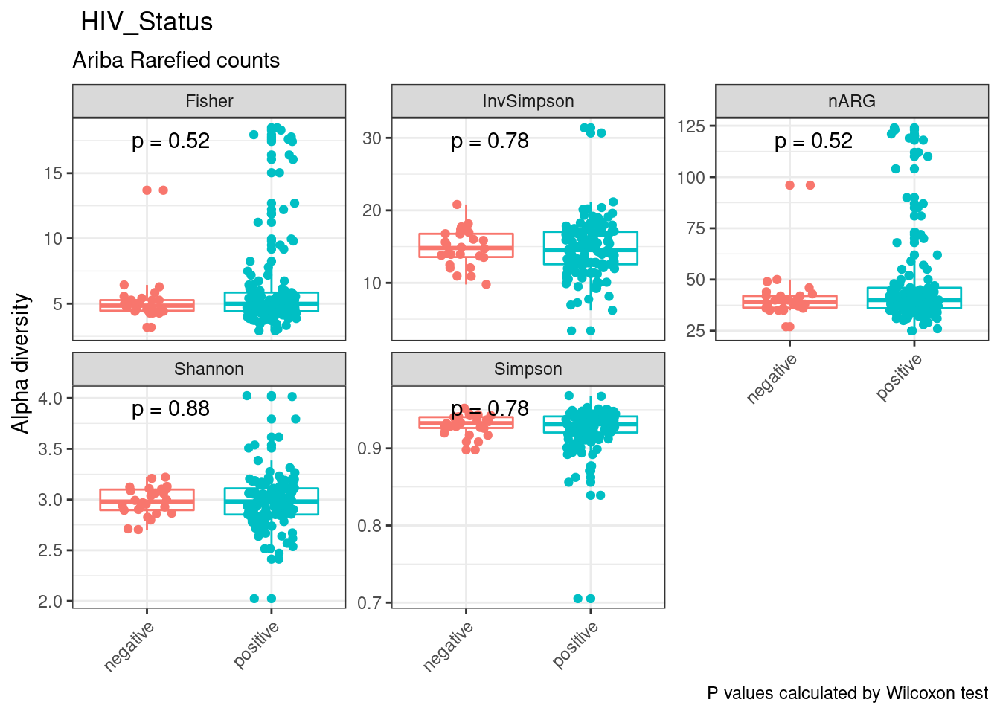
| Version | Author | Date |
|---|---|---|
| 95466a8 | Elisa | 2022-08-21 |
Profile
alpha_div_plot_all(ariba_alpha_rpkm, Profile)+labs(subtitle = "Ariba RPKM")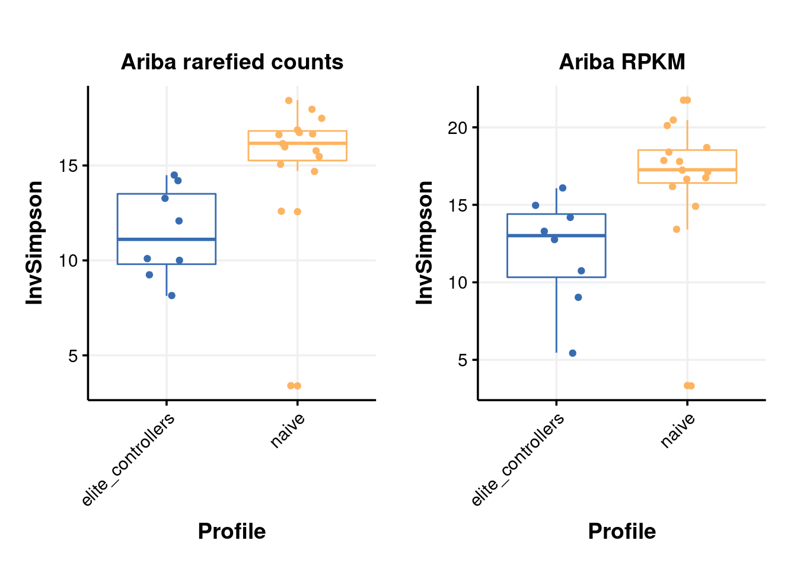
| Version | Author | Date |
|---|---|---|
| 95466a8 | Elisa | 2022-08-21 |
alpha_div_plot_all(ariba_alpha_rar, Profile)+labs(subtitle = "Ariba Rarefied counts")
| Version | Author | Date |
|---|---|---|
| 95466a8 | Elisa | 2022-08-21 |
Pairwise comparisons of InvSimpson and Simpson according to Profile:
pairwise_test<-function(alpha, clin_var){
p_values<-pairwise.wilcox.test(alpha, clin_var, p.adjust.method = "BH")$p.value
pos_sigpvalue<-which(p_values<=0.05, arr.ind = TRUE)
group1<-rownames(p_values)[pos_sigpvalue[1]]
group2<-colnames(p_values)[pos_sigpvalue[2]]
sigp_value<-p_values[which(p_values<=0.05)]
glue("{group1} is signifficantly different from {group2} (p value {round(sigp_value, 4)})")}pairwise_test(ariba_alpha_rpkm$Simpson, ariba_alpha_rpkm$Profile)naive is signifficantly different from elite_controllers (p value 0.0396)pairwise_test(ariba_alpha_rpkm$InvSimpson, ariba_alpha_rpkm$Profile)naive is signifficantly different from elite_controllers (p value 0.0396)pairwise_test(ariba_alpha_rar$Simpson, ariba_alpha_rar$Profile)naive is signifficantly different from elite_controllers (p value 0.0215)pairwise_test(ariba_alpha_rar$InvSimpson, ariba_alpha_rar$Profile)naive is signifficantly different from elite_controllers (p value 0.0215)p1<-ariba_alpha_rar%>%
filter(Profile=="naive" | Profile == "elite_controllers")%>%
ggplot(aes(x=Profile, y=InvSimpson))+
geom_boxplot(aes(colour=Profile))+
geom_jitter(width = 0.2, aes(colour=Profile))+
##stat_compare_means()+
theme_classic()+
theme(legend.position = "none", axis.text.x = element_text(angle=45, hjust = 1))+
labs(title = "Ariba rarefied counts")
p2<-ariba_alpha_rpkm%>%
filter(Profile=="naive" | Profile == "elite_controllers")%>%
ggplot(aes(x=Profile, y=InvSimpson))+
geom_boxplot(aes(colour=Profile))+
geom_jitter(width = 0.2, aes(colour=Profile))+
##stat_compare_means()+
theme_classic()+
theme(legend.position = "none", axis.text.x = element_text(angle=45, hjust = 1))+
labs(title = "Ariba RPKM")
p1+p2
Risk Group 2
alpha_div_plot_all(ariba_alpha_rpkm, RiskGroup2)+labs(subtitle = "Ariba RPKM")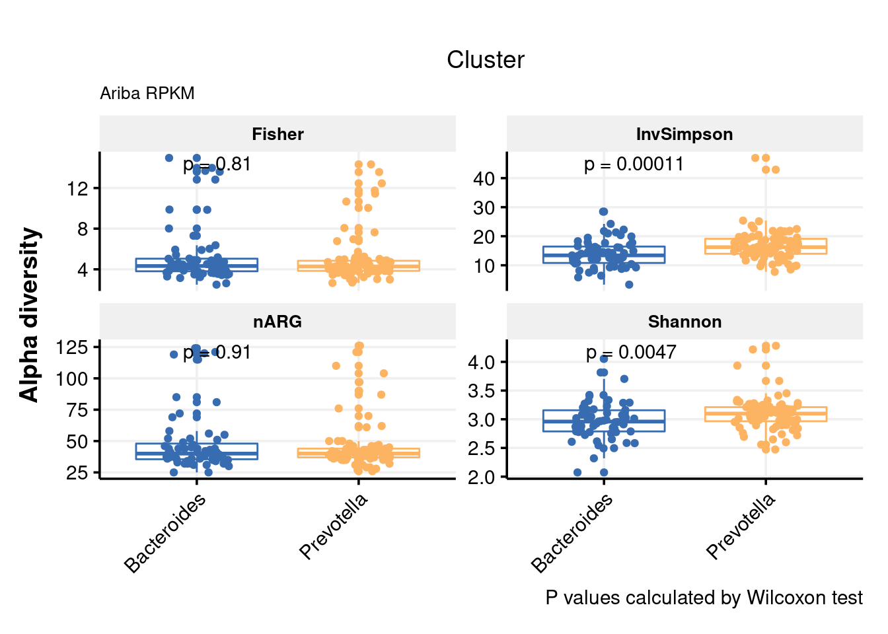
alpha_div_plot_all(ariba_alpha_rar, RiskGroup2)+labs(subtitle = "Ariba Rarefied counts")
Pairwise comparisons
my_comparisons <- list( c("hts", "msm"), c("hts", "pwid"), c("msm", "pwid") )
p_invsimp_rar<-ariba_alpha_rar%>%
filter(!is.na(RiskGroup2))%>%
ggplot(aes(x=RiskGroup2, y=InvSimpson))+
geom_boxplot(aes(colour=RiskGroup2))+
geom_jitter(width = 0.2, aes(colour=RiskGroup2))+
stat_compare_means(comparisons = my_comparisons)+
stat_compare_means(label.y = 45)+
theme_classic()+
theme(legend.position = "none")
p_shannon_rar<-ariba_alpha_rar%>%
filter(!is.na(RiskGroup2))%>%
ggplot(aes(x=RiskGroup2, y=Shannon))+
geom_boxplot(aes(colour=RiskGroup2))+
geom_jitter(width = 0.2, aes(colour=RiskGroup2))+
stat_compare_means(comparisons = my_comparisons)+
stat_compare_means(label.y = 5)+
theme_classic()+
theme(legend.position = "none")
p_invsimp_rpkm<-ariba_alpha_rpkm%>%
filter(!is.na(RiskGroup2))%>%
ggplot(aes(x=RiskGroup2, y=InvSimpson))+
geom_boxplot(aes(colour=RiskGroup2))+
geom_jitter(width = 0.2, aes(colour=RiskGroup2))+
stat_compare_means(comparisons = my_comparisons)+
stat_compare_means(label.y = 65)+
theme_classic()+
theme(legend.position = "none")
p_shannon_rpkm<-ariba_alpha_rpkm%>%
filter(!is.na(RiskGroup2))%>%
ggplot(aes(x=RiskGroup2, y=Shannon))+
geom_boxplot(aes(colour=RiskGroup2))+
geom_jitter(width = 0.2, aes(colour=RiskGroup2))+
stat_compare_means(comparisons = my_comparisons)+
stat_compare_means(label.y = 5.5)+
theme_classic()+
theme(legend.position = "none")
p_invsimp_rar + p_shannon_rar +plot_annotation(title = "Ariba rarefied counts")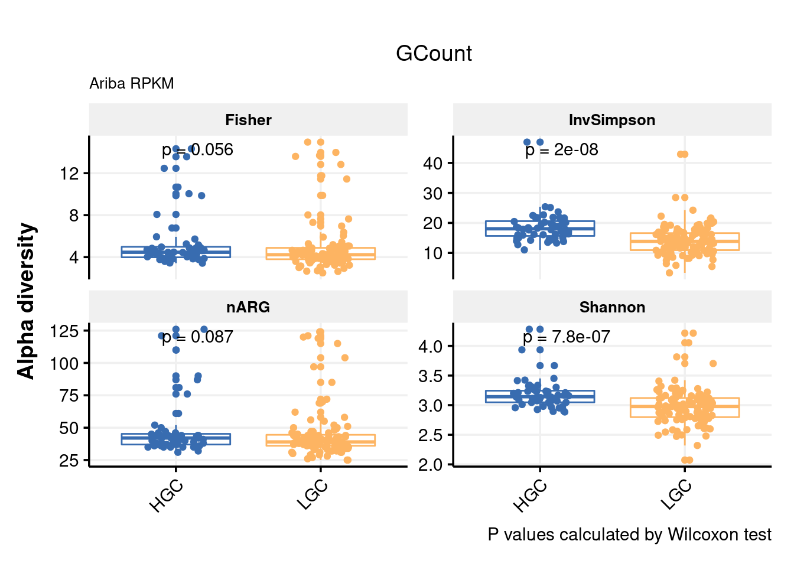
p_invsimp_rpkm + p_shannon_rpkm +plot_annotation(title = "Ariba RPKM")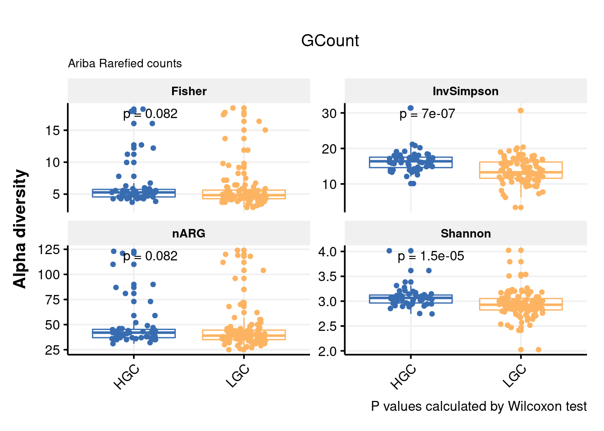
Risk Group (Grouped)
alpha_div_plot_all(ariba_alpha_rpkm, MSM_dic)+labs(subtitle = "Ariba RPKM")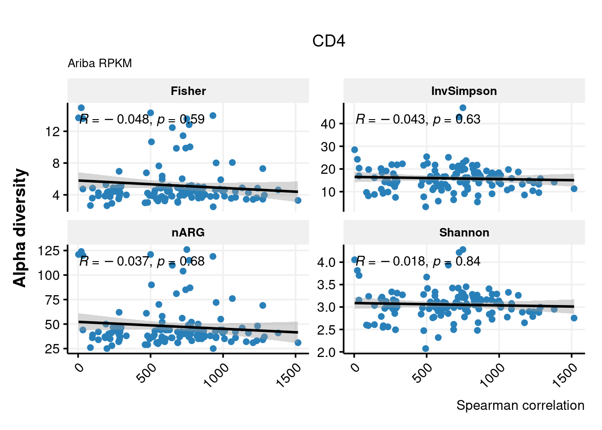
alpha_div_plot_all(ariba_alpha_rar, MSM_dic)+labs(subtitle = "Ariba Rarefied counts")
Microbiome cluster
alpha_div_plot_all(ariba_alpha_rpkm, Cluster)+labs(subtitle = "Ariba RPKM")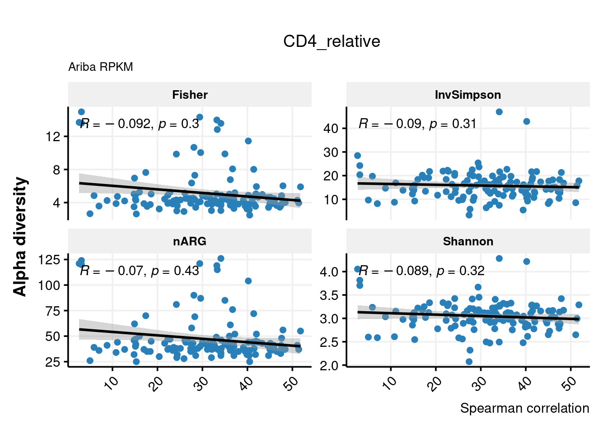
alpha_div_plot_all(ariba_alpha_rar, Cluster)+labs(subtitle = "Ariba Rarefied counts")
Gene richness
alpha_div_plot_all(ariba_alpha_rpkm, GCount)+labs(subtitle = "Ariba RPKM")
alpha_div_plot_all(ariba_alpha_rar, GCount)+labs(subtitle = "Ariba Rarefied counts")
CD4 (absolute)
alpha_div_cor_all(ariba_alpha_rpkm, CD4)+labs(subtitle = "Ariba RPKM")
alpha_div_cor_all(ariba_alpha_rar, CD4)+labs(subtitle = "Ariba Rarefied counts")
CD4 (relative)
alpha_div_cor_all(ariba_alpha_rpkm, CD4_relative)+labs(subtitle = "Ariba RPKM")
alpha_div_cor_all(ariba_alpha_rar, CD4_relative)+labs(subtitle = "Ariba Rarefied counts")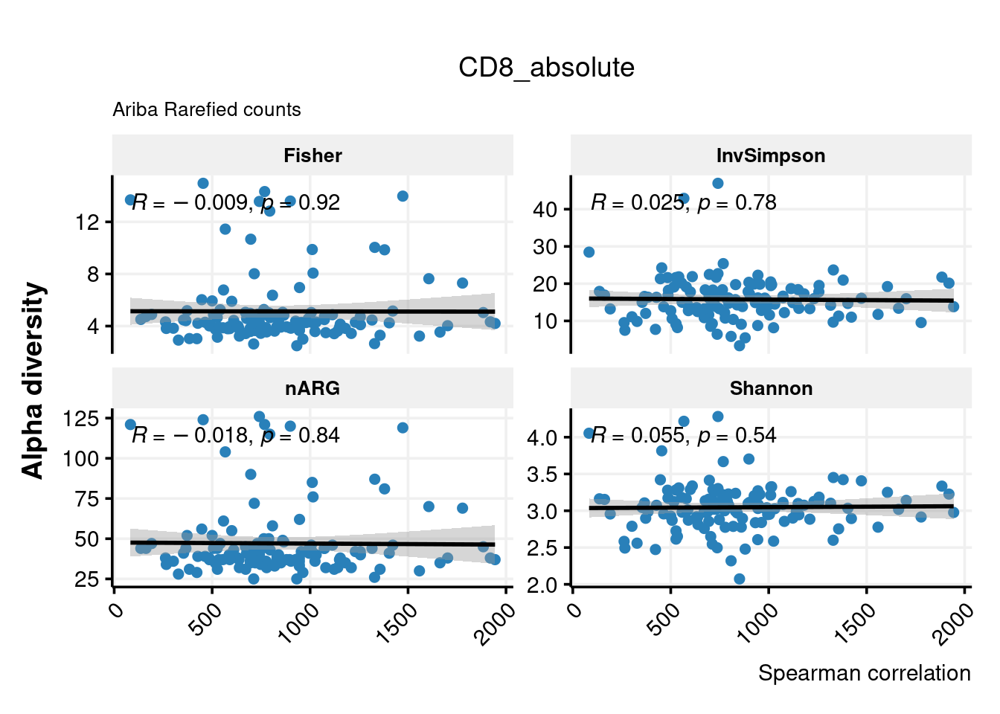
Nadir CD4
alpha_div_cor_all(ariba_alpha_rpkm, Nadir_CD4)+labs(subtitle = "Ariba RPKM")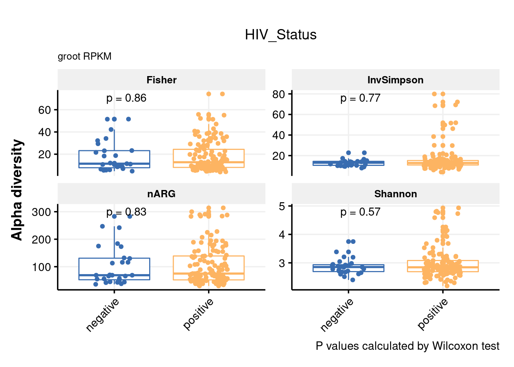
alpha_div_cor_all(ariba_alpha_rar, Nadir_CD4)+labs(subtitle = "Ariba Rarefied counts")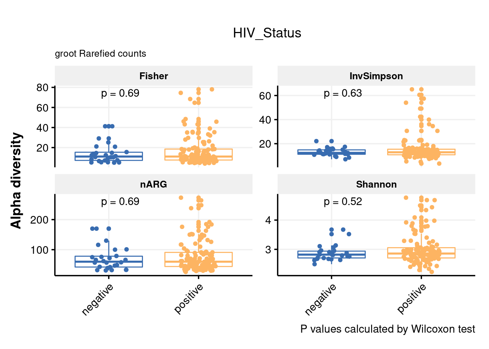
CD4/CD8 ratio
There is one CD8_absolute value of: 1.63, probably a mistake in the metadata. This sample is removed from the analysis
high_ratio<-which(ariba_alpha_rpkm$ratio_CD4_CD8>300)
alpha_div_cor_all(slice(ariba_alpha_rpkm, -high_ratio), ratio_CD4_CD8)+labs(subtitle = "Ariba RPKM")
alpha_div_cor_all(slice(ariba_alpha_rar, -high_ratio), ratio_CD4_CD8)+labs(subtitle = "Ariba Rarefied counts")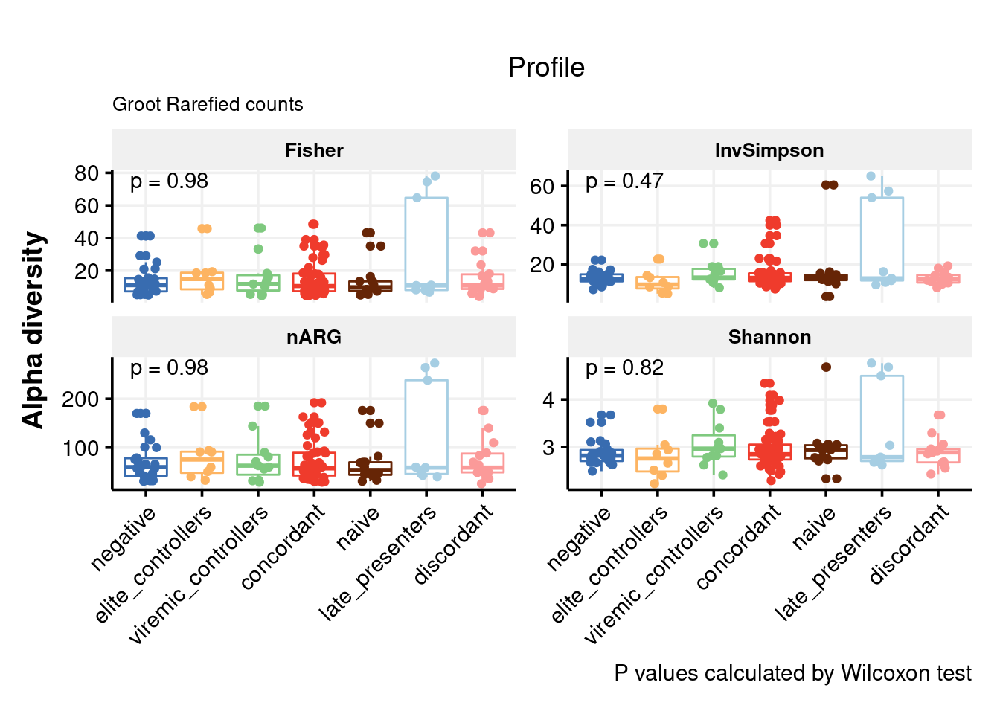
CD8
alpha_div_cor_all(slice(ariba_alpha_rpkm, -high_ratio), CD8_absolute)+labs(subtitle = "Ariba RPKM")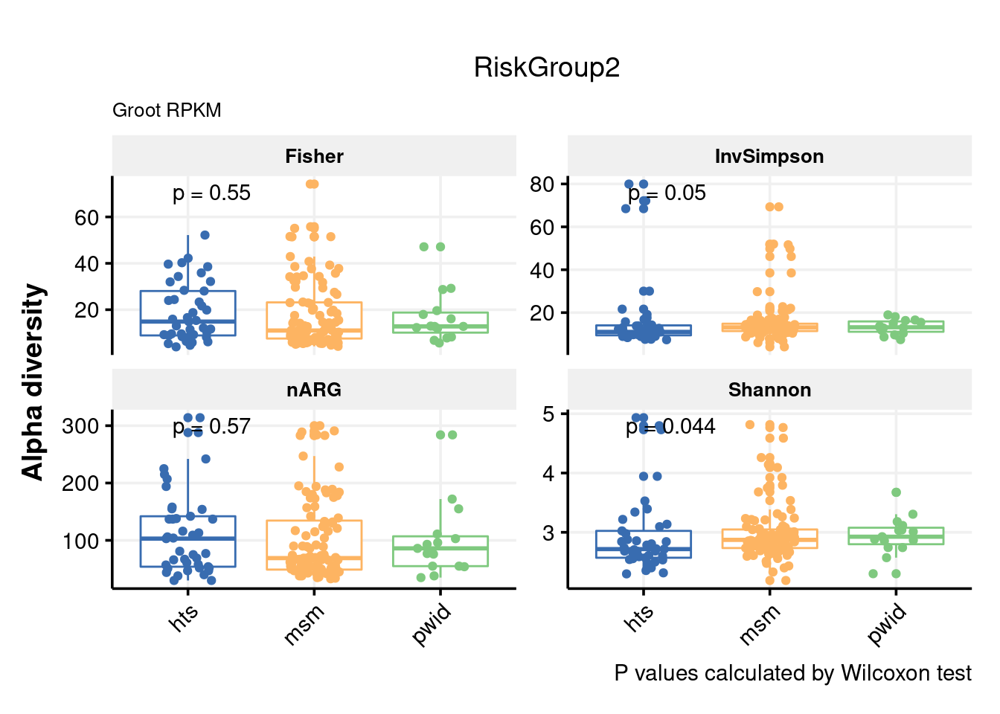
alpha_div_cor_all(slice(ariba_alpha_rpkm, -high_ratio), CD8_absolute)+labs(subtitle = "Ariba Rarefied counts")
Groot
groot_alpha_rpkm<-alpha_div(groot_rpkm, groot_counts, metadata)
groot_alpha_rar<-alpha_div(groot_rar, groot_rar, metadata)HIV status
alpha_div_plot_all(groot_alpha_rpkm, HIV_Status)+labs(subtitle = "groot RPKM")
alpha_div_plot_all(groot_alpha_rar, HIV_Status)+labs(subtitle = "groot Rarefied counts")
Profile
alpha_div_plot_all(groot_alpha_rpkm, Profile)+labs(subtitle = "Groot RPKM")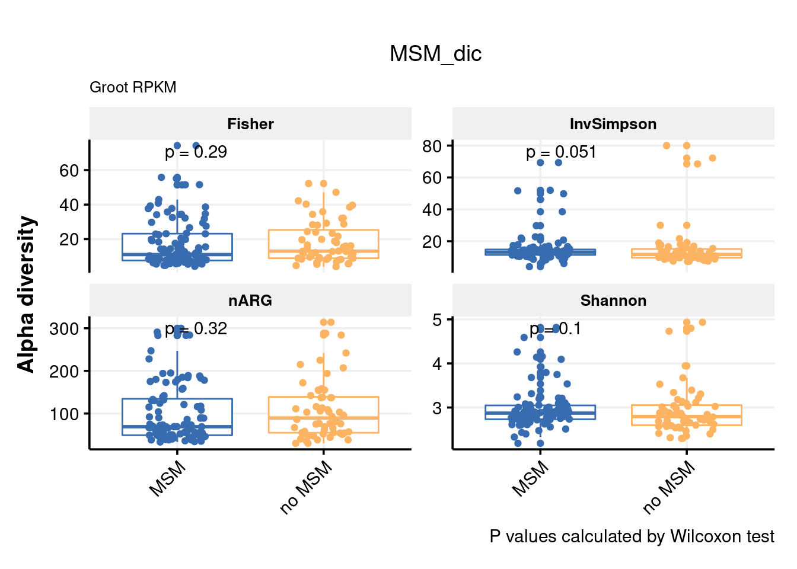
alpha_div_plot_all(groot_alpha_rar, Profile)+labs(subtitle = "Groot Rarefied counts")
Risk Group 2
alpha_div_plot_all(groot_alpha_rpkm, RiskGroup2)+labs(subtitle = "Groot RPKM")
alpha_div_plot_all(groot_alpha_rar, RiskGroup2)+labs(subtitle = "Groot Rarefied counts")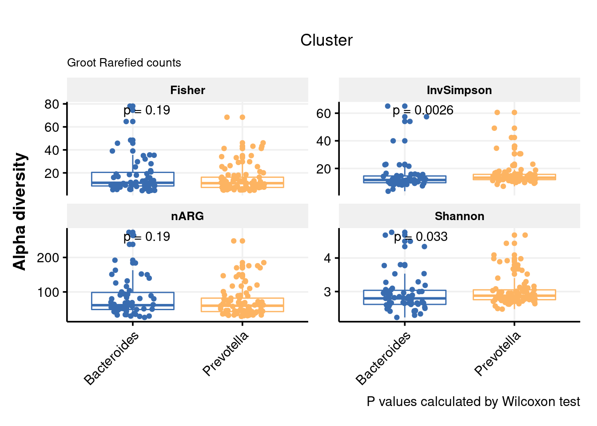
Pairwise comparisons
my_comparisons <- list( c("hts", "msm"), c("hts", "pwid"), c("msm", "pwid") )
p_invsimp_rar<-groot_alpha_rar%>%
filter(!is.na(RiskGroup2))%>%
ggplot(aes(x=RiskGroup2, y=InvSimpson))+
geom_boxplot(aes(colour=RiskGroup2))+
geom_jitter(width = 0.2, aes(colour=RiskGroup2))+
stat_compare_means(comparisons = my_comparisons)+
stat_compare_means(label.y = 90)+
theme_classic()+
theme(legend.position = "none")
p_shannon_rar<-groot_alpha_rar%>%
filter(!is.na(RiskGroup2))%>%
ggplot(aes(x=RiskGroup2, y=Shannon))+
geom_boxplot(aes(colour=RiskGroup2))+
geom_jitter(width = 0.2, aes(colour=RiskGroup2))+
stat_compare_means(comparisons = my_comparisons)+
stat_compare_means(label.y = 6)+
theme_classic()+
theme(legend.position = "none")
p_invsimp_rpkm<-groot_alpha_rpkm%>%
filter(!is.na(RiskGroup2))%>%
ggplot(aes(x=RiskGroup2, y=InvSimpson))+
geom_boxplot(aes(colour=RiskGroup2))+
geom_jitter(width = 0.2, aes(colour=RiskGroup2))+
stat_compare_means(comparisons = my_comparisons)+
stat_compare_means(label.y = 110)+
theme_classic()+
theme(legend.position = "none")
p_shannon_rpkm<-groot_alpha_rpkm%>%
filter(!is.na(RiskGroup2))%>%
ggplot(aes(x=RiskGroup2, y=Shannon))+
geom_boxplot(aes(colour=RiskGroup2))+
geom_jitter(width = 0.2, aes(colour=RiskGroup2))+
stat_compare_means(comparisons = my_comparisons)+
stat_compare_means(label.y = 6)+
theme_classic()+
theme(legend.position = "none")
p_invsimp_rar + p_shannon_rar +plot_annotation(title = "Groot rarefied counts")
p_invsimp_rpkm + p_shannon_rpkm +plot_annotation(title = "Groot RPKM")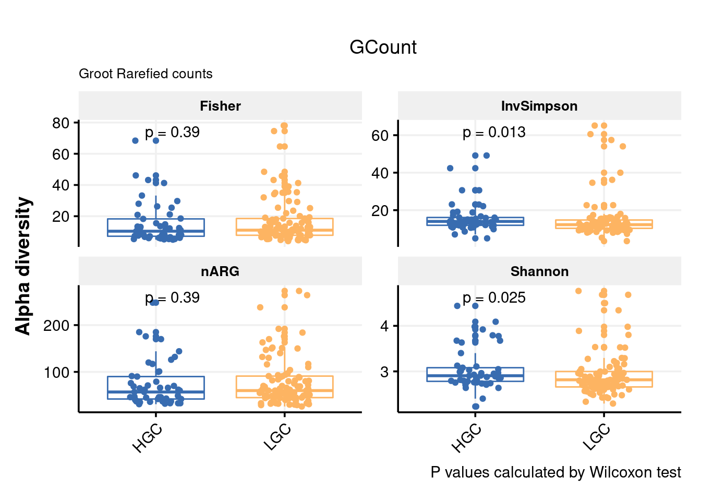
Risk Group (Grouped)
alpha_div_plot_all(groot_alpha_rpkm, MSM_dic)+labs(subtitle = "Groot RPKM")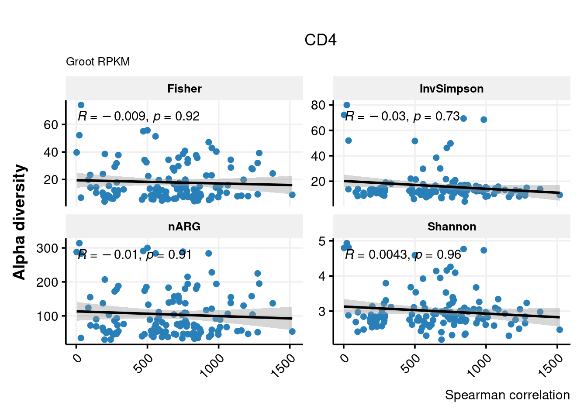
alpha_div_plot_all(groot_alpha_rar, MSM_dic)+labs(subtitle = "Groot Rarefied counts")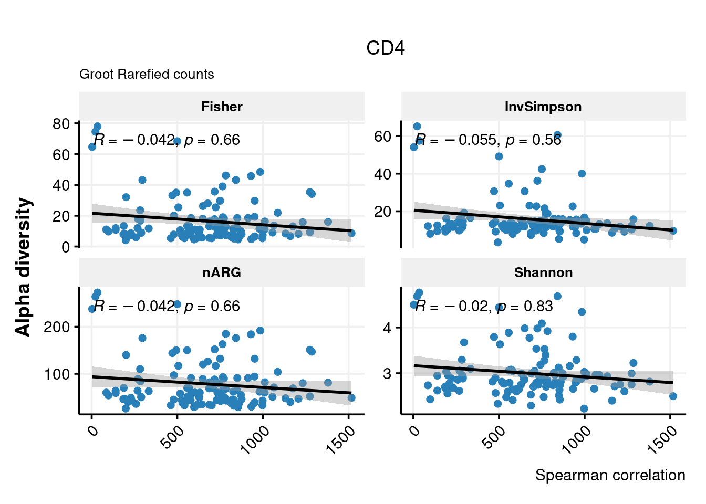
Microbiome cluster
alpha_div_plot_all(groot_alpha_rpkm, Cluster)+labs(subtitle = "Groot RPKM")
alpha_div_plot_all(groot_alpha_rar, Cluster)+labs(subtitle = "Groot Rarefied counts")Gene richness
alpha_div_plot_all(groot_alpha_rpkm, GCount)+labs(subtitle = "Groot RPKM")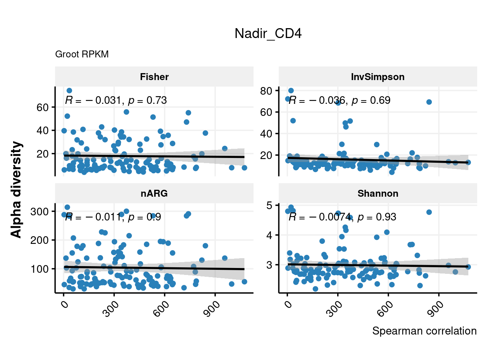
alpha_div_plot_all(groot_alpha_rar, GCount)+labs(subtitle = "Groot Rarefied counts")CD4 (absolute)
alpha_div_cor_all(groot_alpha_rpkm, CD4)+labs(subtitle = "Groot RPKM")alpha_div_cor_all(groot_alpha_rar, CD4)+labs(subtitle = "Groot Rarefied counts")CD4 (relative)
alpha_div_cor_all(groot_alpha_rpkm, CD4_relative)+labs(subtitle = "Groot RPKM")alpha_div_cor_all(groot_alpha_rar, CD4_relative)+labs(subtitle = "Groot Rarefied counts")Nadir CD4
alpha_div_cor_all(groot_alpha_rpkm, Nadir_CD4)+labs(subtitle = "Groot RPKM")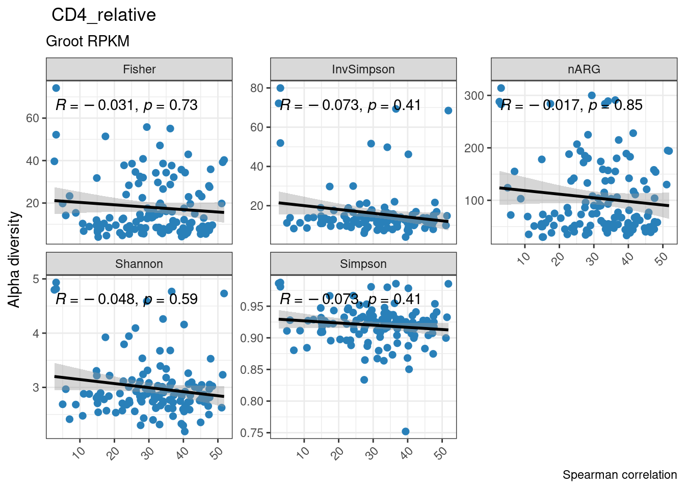
alpha_div_cor_all(groot_alpha_rar, Nadir_CD4)+labs(subtitle = "Groot Rarefied counts")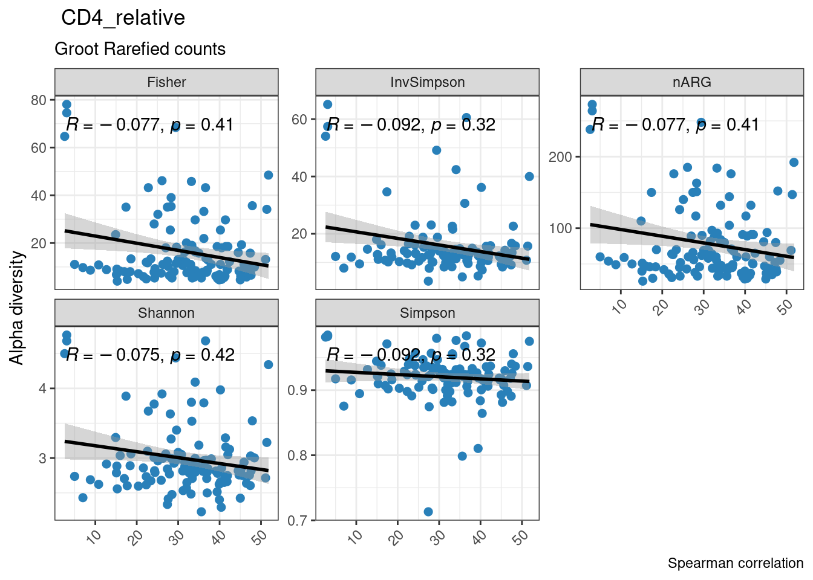
CD4/CD8 ratio
There is one CD8_absolute value of: 1.63, probably a mistake in the metadata. This sample is removed from the analysis
high_ratio<-which(groot_alpha_rpkm$ratio_CD4_CD8>300)
alpha_div_cor_all(slice(groot_alpha_rpkm, -high_ratio), ratio_CD4_CD8)+labs(subtitle = "Groot RPKM")high_ratio<-which(groot_alpha_rar$ratio_CD4_CD8>300)
alpha_div_cor_all(slice(groot_alpha_rar, -high_ratio), ratio_CD4_CD8)+labs(subtitle = "Groot Rarefied counts")CD8
alpha_div_cor_all(slice(groot_alpha_rpkm, -high_ratio), CD8_absolute)+labs(subtitle = "Groot RPKM")alpha_div_cor_all(slice(groot_alpha_rpkm, -high_ratio), CD8_absolute)+labs(subtitle = "Groot Rarefied counts")Conclusions
Similar results between Groot and Ariba
Similar results between Rarefied counts and RPKM values for each pipeline
HIV status: no differences in alpha diversity
Profile: Higher Simpson/InvSimpson diverstiy index in naive compared to elite controllers only for Ariba analyisis, no differences in Groot analysis
Risk Group2: Lower alpha diversity (Simpson/InvSimpson and Shannon) in hts group compared to msm
Microbiome Cluster: Lower alpha diversity (Simpson/InvSimpson and Shannon) in Bacteroides cluster
CD4, Nadir CD4, CD8, CD4/CD8 ratio: No significant correlation between CD4 levels and Nadir CD4 and alpha diversity.
sessionInfo()R version 4.1.2 (2021-11-01)
Platform: x86_64-pc-linux-gnu (64-bit)
Running under: Ubuntu 20.04.3 LTS
Matrix products: default
BLAS: /usr/lib/x86_64-linux-gnu/blas/libblas.so.3.9.0
LAPACK: /usr/lib/x86_64-linux-gnu/lapack/liblapack.so.3.9.0
locale:
[1] LC_CTYPE=es_ES.UTF-8 LC_NUMERIC=C
[3] LC_TIME=es_ES.UTF-8 LC_COLLATE=es_ES.UTF-8
[5] LC_MONETARY=es_ES.UTF-8 LC_MESSAGES=es_ES.UTF-8
[7] LC_PAPER=es_ES.UTF-8 LC_NAME=C
[9] LC_ADDRESS=C LC_TELEPHONE=C
[11] LC_MEASUREMENT=es_ES.UTF-8 LC_IDENTIFICATION=C
attached base packages:
[1] stats graphics grDevices utils datasets methods base
other attached packages:
[1] patchwork_1.1.1 glue_1.6.2 ggpubr_0.4.0 vegan_2.5-7
[5] lattice_0.20-45 permute_0.9-7 kableExtra_1.3.4 forcats_0.5.1
[9] stringr_1.4.0 dplyr_1.0.8 purrr_0.3.4 readr_2.1.2
[13] tidyr_1.2.0 tibble_3.1.6 ggplot2_3.3.5 tidyverse_1.3.1
loaded via a namespace (and not attached):
[1] nlme_3.1-157 fs_1.5.2 bit64_4.0.5 lubridate_1.8.0
[5] webshot_0.5.2 httr_1.4.2 rprojroot_2.0.2 tools_4.1.2
[9] backports_1.4.1 bslib_0.3.1 utf8_1.2.2 R6_2.5.1
[13] DBI_1.1.2 mgcv_1.8-38 colorspace_2.0-3 withr_2.5.0
[17] tidyselect_1.1.2 bit_4.0.4 compiler_4.1.2 git2r_0.30.1
[21] cli_3.3.0 rvest_1.0.2 xml2_1.3.3 labeling_0.4.2
[25] sass_0.4.1 scales_1.2.1 systemfonts_1.0.4 digest_0.6.29
[29] rmarkdown_2.13 svglite_2.1.0 pkgconfig_2.0.3 htmltools_0.5.2
[33] highr_0.9 dbplyr_2.1.1 fastmap_1.1.0 rlang_1.0.2
[37] readxl_1.3.1 rstudioapi_0.13 farver_2.1.0 jquerylib_0.1.4
[41] generics_0.1.2 jsonlite_1.8.0 vroom_1.5.7 car_3.0-12
[45] magrittr_2.0.2 Matrix_1.4-0 Rcpp_1.0.8.3 munsell_0.5.0
[49] fansi_1.0.3 abind_1.4-5 lifecycle_1.0.1 stringi_1.7.6
[53] whisker_0.4 yaml_2.3.5 carData_3.0-5 MASS_7.3-56
[57] grid_4.1.2 parallel_4.1.2 promises_1.2.0.1 crayon_1.5.1
[61] haven_2.4.3 splines_4.1.2 hms_1.1.1 knitr_1.38
[65] pillar_1.7.0 ggsignif_0.6.3 reprex_2.0.1 evaluate_0.15
[69] modelr_0.1.8 vctrs_0.3.8 tzdb_0.2.0 httpuv_1.6.5
[73] cellranger_1.1.0 gtable_0.3.0 assertthat_0.2.1 xfun_0.30
[77] broom_1.0.1 rstatix_0.7.0 later_1.3.0 viridisLite_0.4.0
[81] workflowr_1.7.0 cluster_2.1.2 ellipsis_0.3.2